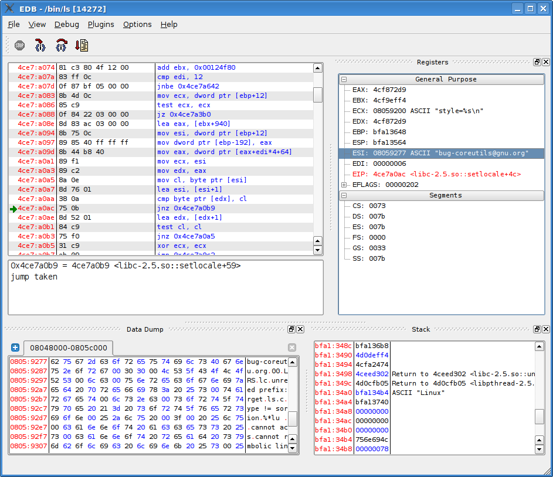

General Interface

The interface is broken down into 4 primary regions.
The Disassembly View
The Register View
The Stack View
The Data Dump View
Each of these can be dragged, docked, undocked, hidden and shown according to the users preferences and needs.